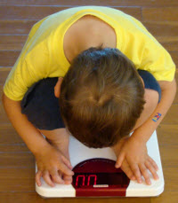
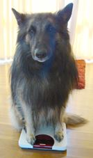
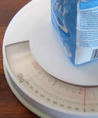
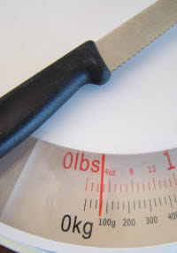

Activity: Discover Mass (Weight)
Mass is how much matter is in something. We can measure this by weighing. So today we will be ...
Weighing!
You will need:
- Kitchen Scales (for smaller items)
- Bathroom Scales (for larger items)
- Pen and paper
You can measure using grams (g), kilograms (kg), ounces (oz) or lbs (lb).
|  |  |
| Weigh a child | Weigh your dog |
Examples

Using Kitchen Scales to measure 1 kg (2.2 lb) of sugar

Using Bathroom Scales to measure a 2.5 kg weight

This knife weighs about 75 g (nearly 3 oz)
How did I measure that?
Between 0 and 4oz there are 4 spaces, so each mark means 1oz. The pointer is nearly up to the 3rd mark, which means nearly 3oz.
Likewise between 0 and 100g there are 4 spaces, so each mark means 25g.
The pointer is on the 3rd mark, which means 75g.
Some ideas of things to measure:
- Jars of food
- Bottles (empty or full)
- Spoons
- Cups (with and without water)
- Books
- Toys
- People
- Bags
Fill In This Table
Write down your Guess just before you measure the Actual weight. As you measure more things, your guesses can get better.
| Item | Guess | Actual |
From Smallest to Largest
Lastly, list all the items you measured, from the smallest to largest mass.
Example: Small bottle (empty), spoon, ...